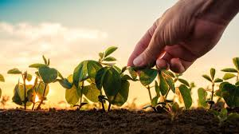

Sustentábilidade Rural: Conectando comunidades Rurais e Urbanas.
-
Em meu ponto de vista a sustentábilidade rural é muito importante para garantir o equilíbrio
entre as atividades agrícolas, a preservação do meio ambiente e o bem-estar das comunidades rurais. Conectar
o campo e a cidade é uma parte essencial desse processo, permitindo a troca de conhecimentos,
recursos e produtos, promovendo um desenvolvimento mais sustentável em todas as áreas.

-
A troca de conhecimentos entre o campo e a cidade pode ocorrer de várias maneiras como, programas de educação e capacitação, onde
agricultores familiares e grandes técnicos agrícolas compartilham experiências e boas práticas com consumidores urbanos,
promovendo uma maior valorização dos produtos sustentáveis.
Aqui darei algumas sujestões para que o campo e cidade existam em harmonia, assim também melhorando
a qualidade de vida da população. Para mais informações vá para a proxima página.